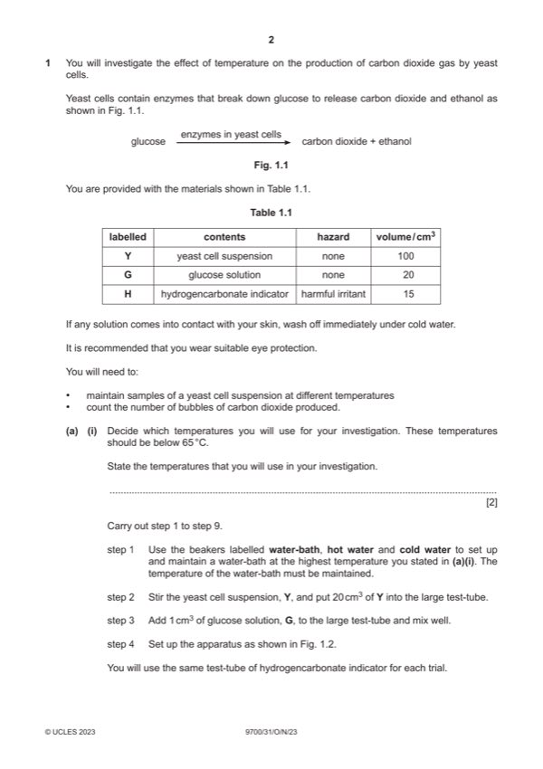

Question 1

Original paper page 2
Part 1(a)(i) — solution
1 states at least five temperatures below 65 °C ; 2
Mark points
- Include the ideas shown in the solution above.
Part 1(a)(ii) — solution
1 heading for independent variable: 5
temperature / °C ;
Mark points
- Include the ideas shown in the solution above.
Part 1(a)(iii) — solution
number of bubbles ; 1
Mark points
- Include the ideas shown in the solution above.
Part 1(a)(iv) — solution
yellow / orange ; 1
Mark points
- Include the ideas shown in the solution above.
Part 1(a)(v) — solution
pH falling / becoming more acidic ; 1
Mark points
- Include the ideas shown in the solution above.
Part 1(a)(vi) — solution
any two from: 2
Mark points
- Include the ideas shown in the solution above.
Part 1 — solution
(error) using same indicator each time ;
(improvement) use separate indicator each time ;
Mark points
- Include the ideas shown in the solution above.
Part 1(b)(i) — solution
1 label on x-axis: concentration of copper ions (/) ppm 4
and
label on y-axis: mass of yeast (/) g ;
Mark points
- Include the ideas shown in the solution above.
Part 1(b)(ii) — solution
1 shows on y-axis reading taken at 10 g ; 2
Mark points
- Include the ideas shown in the solution above.
Part 1(b)(iii) — solution
1 ref. to changes to shape of active site ; 2
Mark points
- Include the ideas shown in the solution above.
Part 1(b)(iv) — solution
copper will, reduce growth of yeast / reduce fermentation ; 1
2023 Page 6 of 7
9700/31 Cambridge International AS & A Level – Mark Scheme October/November 2023
Mark points
- Include the ideas shown in the solution above.